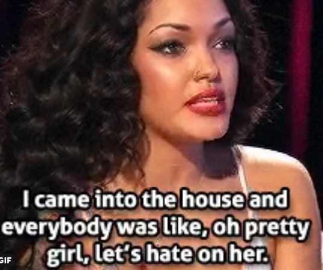

Enter Your Birthday
"Capricorn is the best zodiac sign.. why? because GOD WAS A CAPRICORN that's why"
-@denzeldion
"Aquarius is an AIR sign"
-@bobatl
"I just saw a star is born and my Pisces ass felt literally every emotion I’m not okay and won’t be for a while"
-@someone
i literally only hate one aries but i hate that aries with my entire fucking Being .
-@gorewooseok
"taurus virgo and aquarius when they're proven wrong about something:"
-jakesastrology
"Whenever a Gemini gets 12th placing in best to worst sign:
-@alexsvntiago
"I’m literally the worst cry baby ever I’m really living the cancer zodiac sign lifestyle"
@seeingkind
"Libras & Leos are the top spenders of all horoscopes"
-@Nancy_Cruises
"It’s that time of the year where I go through my likes and clear out as many as I can. I can’t wait. The Virgo in me is ready to be ORGANIZED!"
-@thisisbreanna
"Libra season has stripped me of my shame I got no censor left"
-@les_bee_an
"A scorpio without an obsession is lost in life"
-@_nighthawk69_
"So apparently there's a separate form of astrology called sidereal which calculates ur signs differently and im a fucking SAG SUN GEMINI MOON GEMINI RISING in that system.. no thanks ! I'll stick with tropical astrology thx"
-@vegehosh